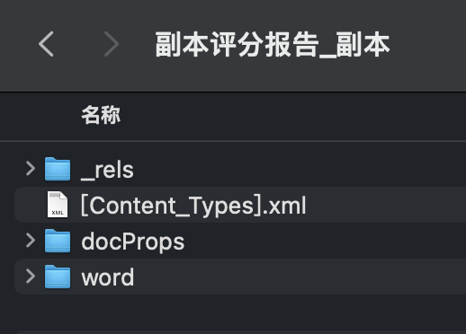

# 用 node 帮女朋友生成报告单
# 背景
女朋友是医学生， 平时需要在医院里实习。最近老师给了她一个任务：从一个调查问卷里导出结果表（一个 excel 文件），并且把每个人的结果填写到特定的一个模版报告单。
但是这个结果有几百个人（意味着要复制黏贴上千次），重复无意义且繁琐的工作，严重影响了与男朋友聊天的时间。
身为男朋友的我怎能袖手旁观，重复工作就应该交给机器！
花费了大概一个下午的时间，完成了一个 node 小脚本，我女朋友只需要编辑好模版插值的位置，导入结果 excel，每个人的结果文件就会在数秒内自动生成，已完成交付。
# 需求点
- 表格的识别
- word 模板的识别
- 特定列的结果要加以计算判断并输出最终医嘱
- 文件名称要根据每个人的名字生成
# 分析
# 表格的解析
使用 exceljs 这个库进行 excel 的解析。这个库挺强大，可以读取、操作并写入数据和样式到 xlsx 文件，号称一个一个 Excel 电子表格文件逆向工程项目。
# 模板 word 文件的识别
这里文件的识别说难也不难，快速调研之后发现，其实 Word 文件基本都遵循一个标准进行存储： Microsoft Office Open XML标准 ，
这个标准是用于描述和存储电子文档，由 Ecma International （欧洲计算机制造商协会）管理和维护的
而 XML 和 HTML 一样都是常用的标记语言，XML 更多用于数据交换。
而 docx 文件其实本质上就是一个压缩包，只要把后缀改成 zip 并解压缩，就可以看到这些文件

其中 word/document.xml 中存放了该 docx 文档的具体内容，我们只要修改这一部分，最终再写回成 zip 文件并改扩展名为 docx ，即可实现根据模版文件输出对应例子。
# 流程
搞定了以上问题，就可以开始编写代码了，代码的工作流程如下：
- 准备一个 excel 表，以及 word 模版
- 将 word 模版中需要将数据插值的地方，填写上约定内容，用于正则匹配识别。
- 这里我写了 %${X}%（其中 X 为 Excel 表格对应的列）
- 读取模版 excel，解析表头与内容
- 使用 admzip，把模版当作 zip 处理，并读取
document.xml的内容 - 使用正则匹配模版内容，读取所有需要插值的地方。
- 针对 excel 内容的每一行，遍历：
- 复制一份模版文件
- 根据需要插值的地方，读取对应的列
- （可选）针对特定的列做一些计算转化，例如回答人的生日计算成年龄填入
- 批量替换，原地修改。
- 写入到目标文件夹，并将扩展名更改成
docx
- 结束。
# 代码
读取 excel：
const parseExcel = async () => { | |
const workbook = new Exceljs.Workbook(); | |
// 此处省略使用 inquirer 命令行交互的指定文件路径录取。 | |
const inputFile = await workbook.xlsx.readFile(path.resolve(get__dirname(), destFile)); | |
const basicSheet = inputFile.getWorksheet('指定sheet'); | |
// 读取表内容，首行为表头 | |
const basicSheetContent = basicSheet.getRows(2, basicSheet.rowCount); | |
return basicSheetContent; | |
} |
读取模版并解析：
const readTemplateAndParse = async () => { | |
const templateZip = new AdmZip('目标文件路径'); | |
const templateContentXML = templateZip.readAsText("word/document.xml"); | |
const originColArr = templateContentXML.match(/%[A-Z]+%/g); | |
const colArr = originColArr.map(str => str.replate(/%/g, "")); | |
return colArr; | |
} |
遍历写入：
const generateResult = async (sheetContent, col) => { | |
// 先 copy 一份 | |
await fs.copyFile( | |
templateFileName, | |
destFileName | |
); // 先拷贝一份，然后在这一份上作修改 | |
let zip; | |
try { | |
zip = new AdmZip(destFileName); | |
} catch(e) { | |
console.error('解析文件错误', e); | |
} | |
const basicSheetContent = await parseExcel(); | |
basicSheetContent.forEach(async row => { | |
let contentXML: string = zip.readAsText("word/document.xml"); | |
const cols = readTemplateAndParse(); | |
for (let j = 0; j < cols.length; j++) { | |
const value = row. | |
// 计算属性取值过程省略 | |
contentXML = contentXML.replace(`%${cols[j]}%`, computeValue); | |
} | |
try { | |
await zip.addFile("word/document.xml", Buffer.from(contentXML)); // 写入 | |
await zip.writeZip(destFileName); | |
await fs.rename(descFileName, descDocx); | |
} | |
}) | |
} |
# 问题点 / 卡点
# ESM+TS 的选用
一开始在选择是使用 esm 还是 cjs 规范写时，选择了写的更顺手的 esm 规范。
但是很快就遇到一些问题
esm 加载 cjs 只能整体加载，使用
import m from 'xxx.cjs'，然后再内部解构。esm 加载 cjs 的库时也有问题。
- 引入构建工具，例如 rollup，然后用对应插件去处理
@rollup/plugin-commonjs
- 引入构建工具，例如 rollup，然后用对应插件去处理
esm 缺乏
__filename和__dirname等变量- 可以使用 import.meta.url 重建
# 总结
仅仅是写一个脚本，为了追求快速，直接一通操作……：
npm init初始化- 设置 package.json，
type为module - 添加一波需要的依赖并安装：
adm-zip、chalk、dayjs、exceljs、inquirer... - 上
rollup构建工具，引入必须的插件并配置：@rollup/plugin-typescript、@rollup/plugin-node-resolve、@rollup/plugin-commonjs、@rollup/plugin-json - 配置
tsconfig.json，指定compilerOptions.module与compilerOptions.moduleResolution为NodeNext- 这里的作用为指定让 ts 使用什么模块规范，及使用什么路径查找方案。
- 涉及
__dirname与__filename全局变量的地方，利用import.meta.url替代。 - 编码测试
# 参考资料
- exceljs/README_zh.md at master · exceljs/exceljs (github.com)
- ADM 邮编・cthackers/adm-zip 维基 (github.com)
- 前端是怎么解析 Excel、PDF、Word、PPT 等文件的？ - 掘金 (juejin.cn)
- nodejs 实现一个 word 文档解析器 - 掘金 (juejin.cn)